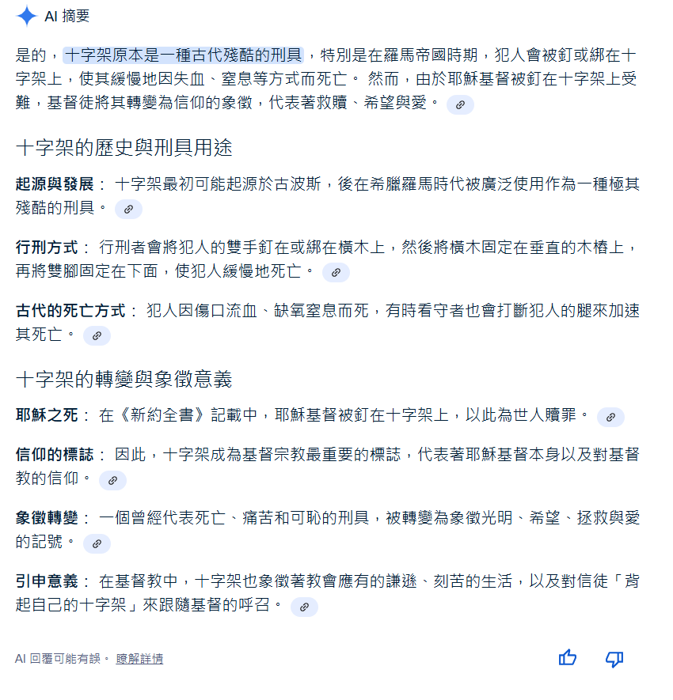
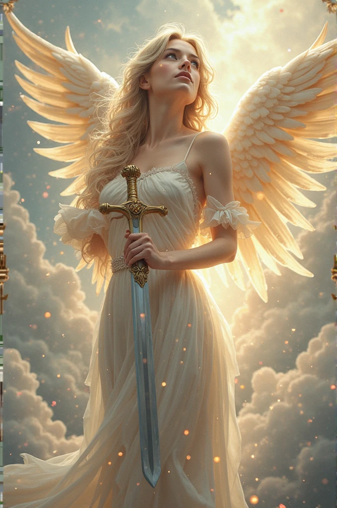

點擊上方的語言選單以切換語言
很多網友看見電影中十字架和聖燭對吸血鬼產生魔法傷害的橋段，以及道士把黃符貼在十字架上且神父把聖水灑在桃木劍上的同時兩人一起大喊：「天主降魔、天師顯靈、中西合璧、天下無敵！」的時候，可能沒有意識到：
在基督信仰中，耶穌被釘死在十字架上，而後復活，使得十字架的象徵性徹底翻轉——從原本的死亡與羞辱，變成了救贖與恩典的標誌。
在台灣，「基督教」這個詞常被誤用來指「基督新教」（Protestantism），但其實「基督教」（Christianity）是一個更廣泛的宗教體系，包含：這三者都是基督信仰的重要分支，不應混為一談。
- 天主教（Catholicism）
- 東正教（Eastern Orthodoxy）
- 基督新教（Protestantism）
耶穌與門徒生活在一世紀的巴勒斯坦地區，從人種上屬於中東人。他們有黑髮、深色眼睛與較深的膚色，而非歐洲藝術常描繪的金髮碧眼形象。在一些考究的聖經動畫或繪本中，會看到更貼近歷史事實的描繪方式。
補充：從人類學分類來看，中東人與歐洲人同屬「高加索人種（Caucasoid）」的一支，但這個分類主要是根據顱骨與體質特徵，不代表他們的膚色或文化完全相同。很多中東人膚色偏深、五官輪廓鮮明，與現代大眾對「白人」的刻板印象有明顯落差，這也說明了為何耶穌不可能是金髮碧眼的北歐人模樣。

基督教起源於今日的中東地區，具體來說，是一世紀的猶太地區（現代的以色列與巴勒斯坦）。耶穌本人是猶太人，生活在羅馬帝國統治下的巴勒斯坦，當時的文化、語言與社會脈絡都屬於亞洲西部的背景。
然而，隨著基督信仰傳入歐洲，特別是羅馬帝國後期的接受與轉化（如君士坦丁大帝將基督教定為合法宗教），其教義、儀式與視覺風格逐漸「歐洲化」。尤其是在中世紀與文藝復興時期，耶穌與門徒雖未普遍被描繪成典型的金髮碧眼白人形象，但許多藝術作品賦予他們白皙膚色與柔和五官，淡化他們的中東猶太背景。另一方面，天使形象卻越來越頻繁被畫成金髮、白膚、淺色眼睛，搭配金色光環、金葉背景等聖潔元素，這種對「神聖／純潔」的視覺想像成為一種歐洲審美傳統。
圖：留著棕色長髮且長相帥氣的耶穌
圖：耶穌與門徒，其服飾風格很明顯是中東服飾而非歐洲服飾，由此可見聖經裡的內容是中東背景而非歐洲
這其實是一種文化轉譯與再詮釋的結果。儘管今日基督教常被視為西方文明的象徵，但從歷史與地理角度來看，它最初是一種亞洲信仰體系。換句話說，基督教是亞洲文化的一部分，被歐洲世界吸收、改寫、再輸出，最終成為西方殖民主義與文化輸出的工具之一。
在藝術史上，「天使」經常被描繪成金髮白膚、膚色潔白、眼睛淺色的形象。這不是出自聖經本身，而是在歐洲中世紀與文藝復興時期，藝術家與教會共同建構的視覺語言，用以展現「神聖性」、「純潔」與「理想美」。以下幾幅畫作便是典型例子：
圖：身穿白色洋裝的金髮碧眼美麗女天使，由AI生成
圖：手持權杖的金髮碧眼美麗女天使，由AI生成
圖：手持聖劍的金髮碧眼美麗女天使，由AI生成
圖：打赤膊的金色短髮碧眼帥氣男天使，由AI生成
圖：身穿盔甲的金色短髮碧眼帥氣男天使，由AI生成
圖：身穿白袍的金色長髮碧眼帥氣男天使，由AI生成
雖然金髮碧眼的耶穌與門徒在歷史上缺乏考古與文獻證據，但網路上卻有大量金髮碧眼的天使肖像，這種形象多為後世藝術家基於歐洲審美與文化想像創作出來的，反映了基督教藝術在不同時代與地域的文化轉譯。
吸血鬼原本是東歐民間信仰中對死亡與疾病的解釋，與基督信仰無關。但隨著基督教傳入歐洲並占據西方文化的主導地位後，吸血鬼被納入惡靈、邪靈的範疇。
因此在現代文學與電影中，常看到吸血鬼懼怕聖水與十字架的設定。例如電影《凡赫辛》中，主角用沾有聖水的十字弓攻擊吸血鬼新娘後，她立刻化為灰燼，這正是文化融合的結果。
德古拉在許多作品中經常被設定為血族始祖，不過除了德古拉以外，網路上也常常看到該隱（Cain）、猶大（Judas）、莉莉絲（Lilith）被設定為吸血鬼的起源角色，且論年資他們三位甚至比德古拉更具資格。
雖然該隱、猶大與莉莉絲的確出現在聖經或猶太神話中，但他們與吸血鬼的關聯並非原始文本中的設定，而是現代創作（如遊戲、小說、影視作品）為了塑造更古老或宗教意味更濃厚的吸血鬼神話而加以衍生的。
以下是一些常見的創作設定：
不過這些設定皆為後人創作，並非出自正統經典文本，因此在文化上並未像德古拉那樣廣為人知。
德古拉（Dracula）這個角色起源於布拉姆・斯托克（Bram Stoker）於1897年所著的小說《德古拉》，靈感來自十五世紀的瓦拉幾亞君主弗拉德三世（Vlad III）。然而從歷史角度來看，德古拉最多只有五百多歲，比起傳說中那些上千年的吸血鬼「始祖」，他其實相當年輕。
不少小說和影視作品中也出現了比德古拉年紀更大的吸血鬼。以《暮光之城》為例，以下吸血鬼角色都比德古拉年紀更長：
| 角色 | 出生年份（設定） | 年齡（至2025年） |
|---|---|---|
| Aro | 公元前1300年 | 約3325歲 |
| Marcus | 公元前1300年 | 約3325歲 |
| Caius | 公元前1300年 | 約3325歲 |
| Alec | 約8世紀 | 約1200歲 |
| Jane | 約8世紀 | 約1200歲 |
| Demetri | 約10世紀 | 約1000歲 |
| Vladimir | 約公元前10世紀 | 約3000歲 |
| Stephan | 約公元前10世紀 | 約3000歲 |
因此，雖然德古拉是吸血鬼文化中最具代表性的角色之一，但他在年齡與創世地位上，並非最早或最強的。
在《Hotel Transylvania》（《尖叫旅社》）系列中，德古拉並非第一個吸血鬼。他有一位父親Vlad，年齡超過四千歲，遠遠比德古拉（約五百多歲）年長。
這部作品中的吸血鬼設定非常不同於傳統印象：
這就像法國麵包在越南殖民時期被引入，後來演變為越南料理中的 Bánh Mì，成為當地文化的一部分。文化是流動且會被在地化、再語境化的。
類似地，咖哩雖然源自印度，但在日本被改良並融合當地飲食文化，成為了經典的「日式咖哩飯」。這種日本咖哩口味較溫和，通常搭配炸豬排（Katsu Curry）與白飯，在日本幾乎成了家常便飯，與原始的印度香料咖哩風格迥異，卻成為日本料理不可或缺的一部分。
文化與信仰的融合，往往比我們表面看到的更為深刻。從宗教符號、歷史語境到跨文化現象，每一個元素都值得我們細細觀察與反思。